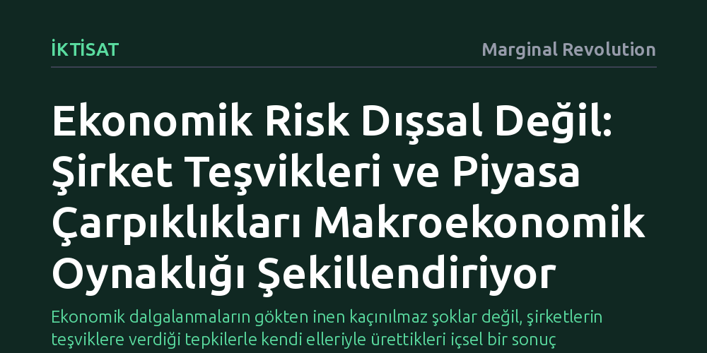

IKTISAT · Marginal Revolution · 2026-10-10
Yeni bir model, makroekonomik riskin dışsal şoklardan değil, şirketlerin teşviklerle belirlediği korelasyon ve verimlilik tercihlerinden doğduğunu gösteriyor. Vergi ve yüksek kâr marjı gibi piyasa çarpıklıkları giderildiğinde, GSYH oynaklığı belirgin biçimde azalıyor.
Ekonomik dalgalanmaların gökten inen kaçınılmaz şoklar değil, şirketlerin teşviklere verdiği tepkilerle kendi elleriyle ürettikleri içsel bir sonuç olduğunu ortaya koyar.

İktisat literatüründe ekonomik dalgalanmalar ve krizler uzun süredir ekonominin dışından gelen beklenmedik şoklarla (petrol krizleri, savaşlar, salgınlar veya ani teknolojik kırılmalar) açıklanma eğilimindeydi. Ancak saygın ekonomi dergisi Quarterly Journal of Economics'te (QJE) yayımlanan yeni bir kuramsal çalışma, risk kavramının hem mikro hem de makro düzeyde tamamen içsel olduğunu, yani doğrudan piyasadaki teşvik mekanizmaları tarafından şekillendirildiğini savunuyor.
Araştırmacıların kurduğu analitik modele göre, şirketler yalnızca ne kadar üretim yapacaklarına karar vermiyor; aynı zamanda kendi verimlilik süreçlerinin ortalamasını, risk derecesini (varyansını) ve diğer firmalarla ne derece senkronize olacağını da seçiyor. Dolayısıyla makroekonomik dalgalanmalar rastlantısal felaketlerden değil, binlerce şirketin rasyonel teşvikler doğrultusunda benzer risk profillerine yönelmesinden kaynaklanıyor.
Modelin merkezinde, tek tek firmaların risk tercihlerinin nasıl bir araya gelerek toplam (makro) riski oluşturduğu sorusu yer alıyor. Bir şirketin tek başına yüksek risk alması tüm ekonomiyi sarsmaya yetmeyebilir. Asıl makroekonomik risk, çok sayıda firmanın birbiriyle pozitif korelasyon gösteren verimlilik süreçlerini tercih etmesiyle ortaya çıkıyor. Şirketler benzer risk havuzlarına girdikçe, küçük bir sarsıntı bile tüm ekonomik yapıyı birden dalgalandırıyor.
Geliştirilen kuram, şirket büyüklüğü ve fiyatlama gücünün bu denklemdeki rolüne dair net öngörüler sunuyor. Modele göre, daha büyük ölçekli firmalar ile kâr marjı (markup) daha düşük olan şirketler daha az oynaklık sergiliyor ve genel ekonomik verimlilikle daha düşük korelasyona sahip oluyor. Araştırmacılar, gerçek piyasa verilerini incelediklerinde bu teorik öngörülerin ampirik verilerle birebir örtüştüğünü doğruluyor.
Araştırmanın en çarpıcı sonucu, kamusal politikaların ve piyasa aksaklıklarının makro istikrar üzerindeki dolaylı etkisinde yatıyor. Vergiler ve rekabeti bozan kâr marjları gibi piyasa çarpıklıkları, şirketlerin risk alma kararlarını doğrudan tahrif ediyor. Firmalar bu tür müdahalelere tepki olarak birbirleriyle daha uyumlu ve daha riskli stratejiler benimsedikçe, dengede Gayri Safi Yurtiçi Hasıla (GSYH) çok daha dalgalı hale geliyor.
Modelin kalibre edilmiş versiyonunda yapılan simülasyonlar, bu çarpıklıkların ortadan kaldırılmasının GSYH oynaklığını kayda değer ölçüde düşürdüğünü gösteriyor. Bu bulgu, vergi düzenlemeleri ya da piyasa aksaklıklarının sadece kaynak dağılımını bozmakla kalmayıp, ekonomiyi krizlere ve resesyon dalgalarına karşı çok daha kırılgan hale getirdiğini ispatlıyor.
Riskin içsel olduğu ve iş döngülerinin şirketlerin mikro düzeydeki uyum çabalarından kaynaklandığı tezi, iktisat tarihinde derin köklere dayanıyor. Ünlü finans teorisyeni Fischer Black de benzer şekilde iş döngülerinin dışsal para veya talep şoklarından ziyade, ekonominin kendi iç dinamiklerinden ve risk tercihlerinden doğduğunu öne sürmüştü. Tyler Cowen'ın Risk and Business Cycles kitabında da vurgulanan bu yaklaşım, yeni QJE makalesiyle birlikte güçlü ve matematiksel olarak izlenebilir bir kuramsal temele kavuşuyor.
Sonuç olarak bu çalışma, politika yapıcıların dalgalanmaları önlemek için yalnızca kriz anındaki yangını söndürmeye odaklanmaması gerektiğini hatırlatıyor. Eğer amaç GSYH oynaklığını azaltmaksa, ilk olarak şirketleri aynı yönde risk almaya iten vergi ve kâr marjı çarpıklıklarını düzeltmek gerekiyor.